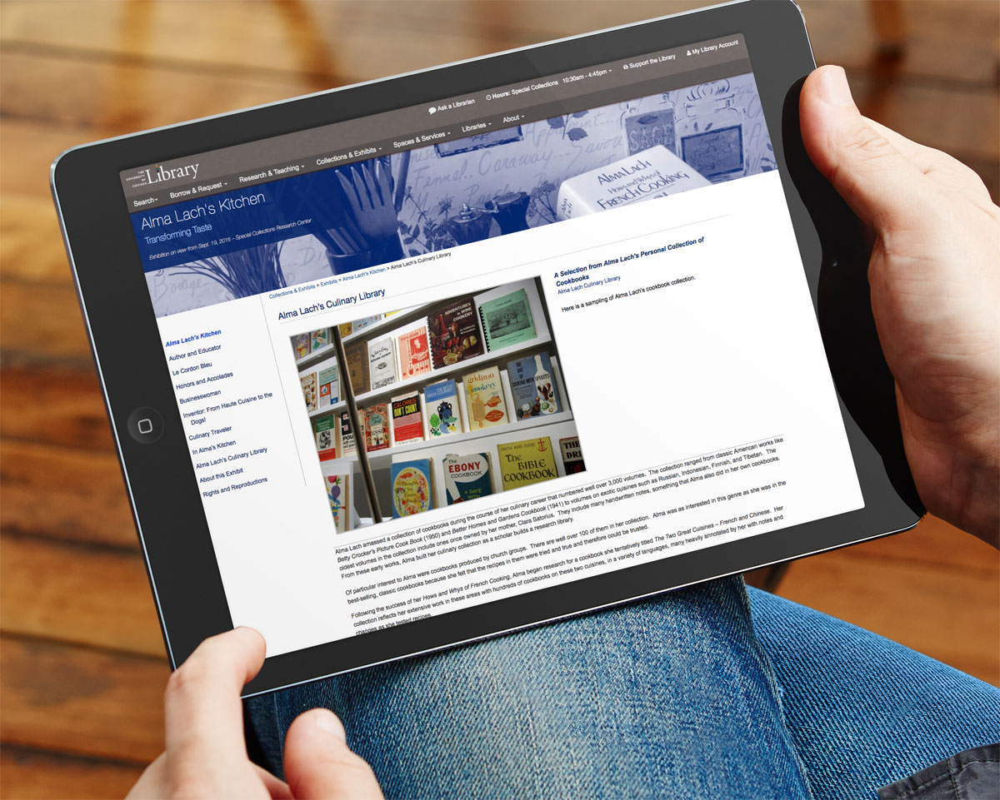
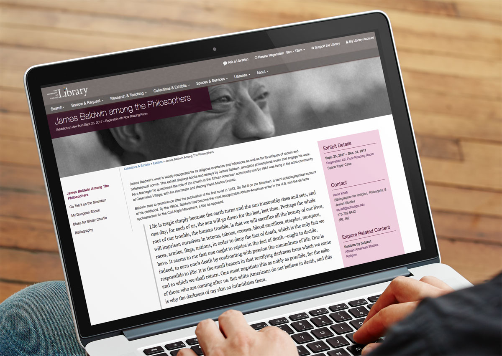
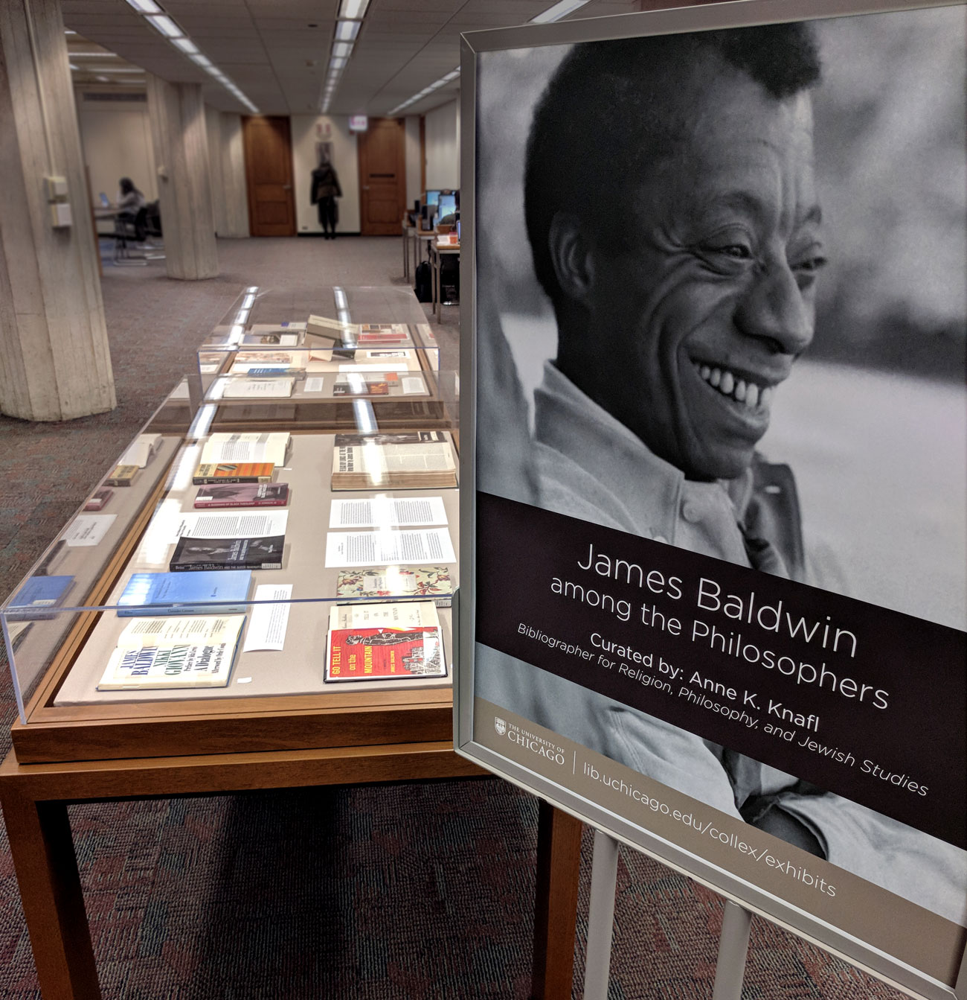
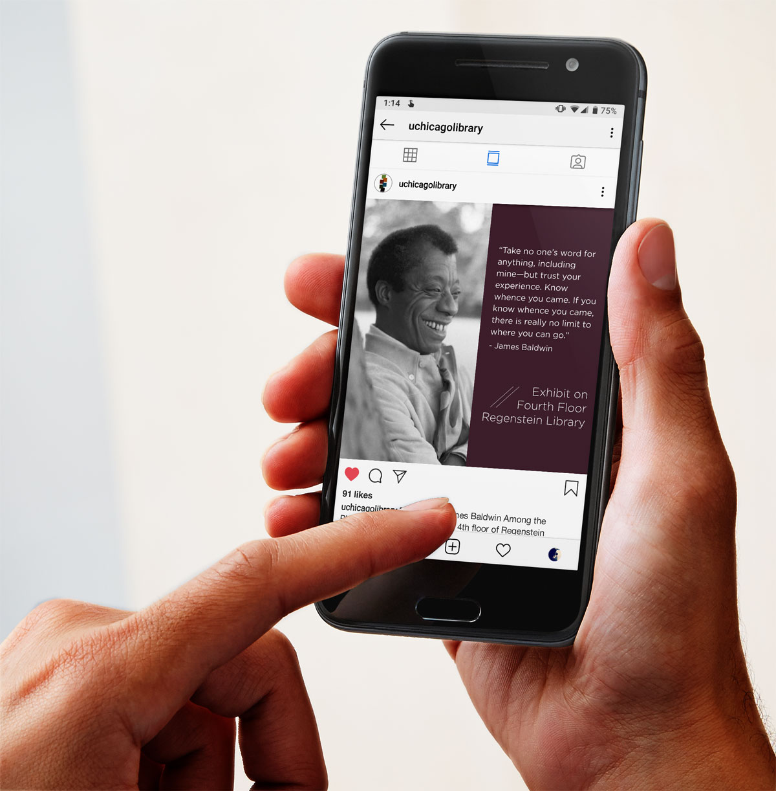

University of Chicago Library Exhibit & Collection Integration
Template redesign, data migration, promotional marketing, and staff training.

Banner, color scheme, and sidebar can be customized

Banner design is expanded to all exhibit materials

Cohesive promotion, unique to the exhibit, is used for all medias.

Problem
Online exhibits were one-off microsites that involved creating new templates for each exhibit. This required expansive developer time and made the curators feel helpless in the creation of their exhibit. Separate templates also created incongruities between exhibits, leaving users confused when navigating between them. Information between exhibits was also siloed, not allowing us to easily connected to related collections or materials.
Promotion for exhibits was normally non-existent or rarely matched the style for the exhibit itself. Since curators didn't understand the process for creating the web pages, they did not feel empowered to make edits or add materials.
Solution
Our website base template was expanded upon to accommodate the unique needs of web exhibits, such as larger images, expansive captioning, and unique color pallets.
Using Sass shade and tint variations, the curator is able to input one color hex in the CMS form and the Sass code will produce a color scheme for the entire web exhibit.
Sass-powered dynamic styling allows for each exhibit to have a unique look, while maintaining the Library's branding and style guidelines.
The expanded templates allows for a hero image that creates a mood for the exhibit, which is then reused in promotional materials.
Sidebar navigation allows users to navigate within the exhibit while still having the main Library website at the top and bottom, orienting them and branding the work as a University exhibit.
I led training sessions for Curators and Librarians on how to create web exhibits using the new templates, as well as workshops on writing for the web, and organizing visual content for social media.
The right sidebar includes related materials to the exhibit that are automatically populated by matching the subject assignments for the exhibit.
Impact
The easier to use templates, simplified design creation, and training sessions helped make the curators feel empowered to create their online exhibits are they wanted.
Creating subject snippets as the connection between collections and exhibits has increased cross-material browsing on the website. It also showcases the diversity of the Library's collections.
A unified branding campaign for each exhibit allows for recognizable and consistent materials across all platforms that are unique for each exhibit.